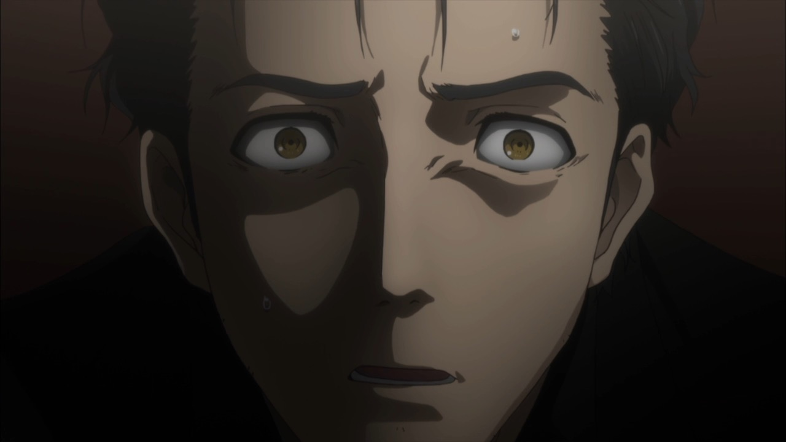

Principe de cohérence de Novikov
Essayer de changer le passé peut conduire à des paradoxes temporels. Le physicien Igor Novikov a conçu son principe pour résoudre le problème des paradoxes du voyage dans le temps, présents dans certaines solutions de la relativité générale qui contiennent des courbes temporelles fermées. Le principe indique que s'il existe un événement susceptible de créer un paradoxe ou une altération du passé, la probabilité que cet événement se produise est nulle. Essentiellement, le principe de cohérence de Novikov rend les paradoxes temporels impossibles. Cela veut dire qu'il est impossible de modifier le passé en suivant une courbe temporelle fermée. C’est une boucle fermée, ce qui signifie que l'objet revient à un moment passé, mais que rien ne changera dans sa ligne du monde. Si vous revenez dans le passé en suivant cette boucle, votre futur aura toujours fait partie du passé.

Cela peut sembler compliqué, alors prenons un exemple. Supposons que vous vouliez vous rencontrer dans le passé en utilisant les courbes temporelles fermées pour remonter dans le temps. Mais quels que soient vos efforts, vous ne pourrez jamais vous parler directement. En effet, vous ne l'avez jamais fait avant de remonter dans le temps et vous ne le ferez jamais. Maintenant, au lieu de tout cela, disons qu'un jour, votre futur moi vous rend visite. Puisque votre futur moi est maintenant là, cela signifie qu'à un moment donné dans le futur, vous voyagerez également dans le temps pour rendre visite à votre passé, devenant ainsi le futur moi que vous avez rencontré.